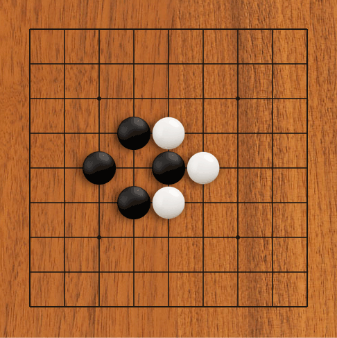

Just imagine a situation like this one. Given enough stubborness, those players would be playing until they pass out. (feel free to watch for a while)

To prevent health problems connected with total fatigue we have this rule:
A completely identical board position must not appear twice in one game.
Therefore, before you can recapture a stone that just captured yours, you have to play elsewhere once
Now that we have established that you cannot immediately recapture a stone that just captured yours (The board would be exactly the same as before and that is prohibited). What are your options then? Basically you have two:
1. You deem the stone not important and play elsewhere, letting your opponent end the ko by connecting his endangered stone if he wants to.
2. You deem the stone important enough to fight the ko. You still have to play elsewhere (of course) but you try to find a move your opponent will feel compelled to respond to locally (we call that a ko-threat).
Confusing? Then check out the follwoing example, it will be clear in no time.
Your browser sucks. Download something up to date.
The hard part - of course - is judging if the threat is big enough to respond to, or whether it is more beneficial to end the ko. But hey, I said the rules are easy, not the game itself.
Actually, let me get back to this one later
EZ, I got this, what's next?